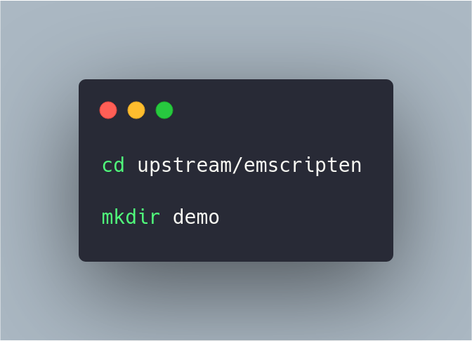
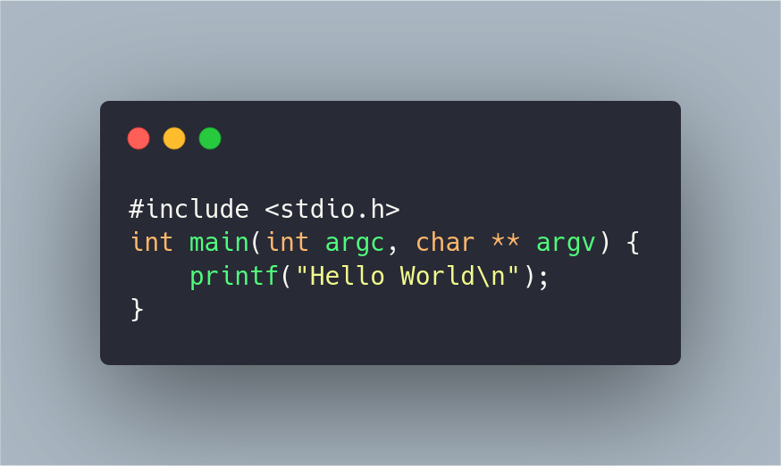
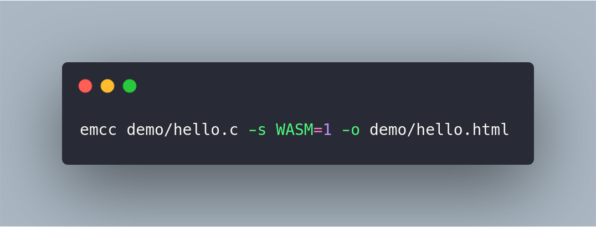
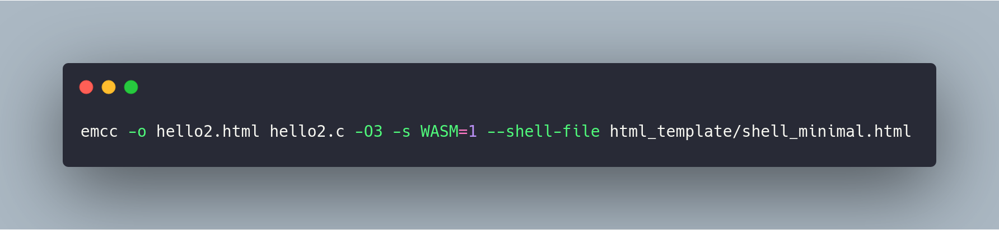

Какво е WebAssembly ?
WebAssembly (накратко Wasm) е безопасен, портативен език от ниско ниво, направен с цел ефикастно изпълнение и компактно репрезентиране. Главната му цел е да постигне висока производителност при Уеб приложения, без да прави някакви специфични за Уеб предположения, или пък да предлага специфични за Уеб функционалности, с цел да може да бъде използван в други среди. WebAssembly е отворен стандарт, разработван от W3C Community Group.[1]
WebAssembly е голяма стъпка напред за уеб платформата — предоставя начин да се изпълнява код написан на различни езици върху уеб с почти никакво забавяне в скоростта, с клиентски приложения вървящи върху уеб.
WebAssembly е създаден да допълва и да върви заедно с JavaScript — чрез използване на WebAssembly JavaScript API, може да се зареждат WebAssembly модули в JavaScript приложение и да се споделят функционалности между двата езика. Това позволява да се възползвате от производителността и силата на WebAssembly и експресивността и гъвкавостта на JavaScript в едно и също приложение, дори и да не знаете как да пишете WebAssembly код. [2]
WebAssembly е нов тип код, който може да бъде изпълняван в съвременните уеб браузъри, и предлага нови функционалности и голям напредък в производителността. Езикът няма за цел да бъде писан директно, а да бъде като ефективен продукт от компилацията на други езици от ниско ниво като C, C++, Rust и други.
Как WebAssembly се вписва в Уеб платформата?
Уеб платформата може да бъде представена на две части:
- Виртуална машина, която изъплнява Уеб кода - например JavaScript кода, който захранва вашите приложения.
- Набор от Web API-та, които Уеб приложението може да извиква с цел контрол на уеб браузъра/устройствата. ( DOM, CSSOM, WebGL, IndexedDB, Web Audio API, и други).
Исторически, виртуалната машина е имала възможно да работи само с JavaScript. Това е добра новина за разработчиците на WebAssembly, защото JavaScript е достатъчно мощен да реши повечето проблеми, с които се сблъскваме всекидевно в мрежата. За сметка на това, обаче, JavaScript има проблеми със производителността, например при 3D игри, виртуална и добавена реалност, компютърно зрение, обработка на изображения/видео и други видове работа, които изискват максимална производителност.
Също така, ресурсите които са нужни за изтегляне, обработка и компилиране на големи JavaScript приложения мже да се окажат непостижими за някои платформи - например мобилинте.
WebAssembly е различен от JavaScript, но той няма за цел да бъде негов заместител. Вместо това, WebAssembly има за цел да бъде като допълнение към JavaScript и да работи паралелно с него. Това позволява на разработчиците да се възползват от предимствата на двата езика:
- - JavaScript е език от високо ниво, гъвкав и достатъчно експресивен, че да се пишат уеб приложения. Има много предимства - динамично типизиран е, интерпретируем е и има голяма екосистема, която предлага мощни среди, библиотеки и други инструменти. -
- WebAssembly е асемблерен език от ниско ниво с компактен бинарен формат, който върви с почти максимална скорост и предлага възможността на други езици от ниско ниво (като C++ и Rust) да бъдат компилирани до WebAssembly и да се изпълняват на Уеб платформата.
С идването на WebAssmebly в браузърите, виртуалната машина ще зарежда и изпълнява два типа код - JavaScript И WebAssembly.
Чрез WebAssembly JavaScript API, функциите от WebAssembly се "обвиват" в JavaScript функции, които могат да бъдат извиквани нормално, а WebAssembly може да импортира и да извиква синхронно нормални JavaScript функции. Най-базовата единица WebAssembly коде се нарича модул, и тези модули са по много начини симетрични на модулите в ES2015.
Цели
Целите, имани в предвид по време на разработката на WebAsssembly са:
- Бърза, безопасна, и преносима семантика:
- Бърза: Изпълнява се с почти максимална скорост, използвайки възможности налични на всички разпространени хардуерни платформи.
- Сигурна: Кодът се валидира и изпълнява изолирана среда, която предотвратява **data corruption** или пробиви в сигурността.
- Добре дефиниран: Напълно и точно дефинира валидни и точни програми, заедно с тяхното поведение, по начин, които е лесен за разбиране неформално и формално.
- Хардуерно независим: Напълно и точно дефинира валидни и точни програми, заедно с тяхното поведение, по начин, които е лесен за разбиране неформално и формално.
- Езиково независим: Няма значение от езика, програмния модел или обектовия модел.
- Платформено независим: Може да бъде вграден в браузъри, да се изпълнява като самостоятелна виртуална машина или интегриран в други среди.
- Отворен: Програмите могат да взаимодействат с тяхната среда чрез прост и универсален начин.
- Ефикасна и преносима репрезентация:
- Компактен: WebAssembly има бинарен формат, който се предава бързо, тъй като е по-малък като размер от типичен текст или native кодови формати.
- Модулнен: Програмите могат да бъдат разделени на малки части, които могат да бъдат предавани, кеширани и използвани поотделно.
- Ефикасен: Могат да бъдат декодирани, валидирани и компилирани на един път, или чрез just-in-time (JIT), или чрез ahead-of-time (AOT) компилация.
- Поточен: Позволява декодирането, валидацията и компилацията да започне възможно най-бързо, дори още преди целите данни да са предадени.
- Паралелен: Позволява декодирането, валидацията и компилацията да бъде разделена на много независими паралелни задачи.
- Преносими: Не разчита на архитектурни предположения, които не са широко поддържани.
WebAssembly кодът също има за цел да е лесен за инспектиране и отстраняване на грешки, особенно в среди като уеб браузъри.[1]
Основни концепции
-
Стойности:
WebAssembly поддържа само четири базови типа стойности. Това са цели числа и IEEE 754-2019 числа, всяко с дължина 32 или 64 бита. 32 битовите цели числа също служат за булеви стойности и за адреси в паметта. Стандартните операции са възможни върху тези типове, включително и пълната матрица от преобразувания между тях. Няма разграничение между целочисления тип със знак и без знак. Вместо това, целите числа са интерпретирани от съответните операции или като такива без знак, или такива със знак.
-
Инструкции:
Изчислителният модел на WebAssembly е базиран на стек машина. Кодът се състои от поредица от инструкции, които се изпълняват подред. Инструкциите манипулират стойности в имплицитен операндов стек. Тези инструкции се разделят на два основни категории. Простите инструкции изпълняват базови операции върху данните. Те изкарват аргументи от операндния стек и вкарват резултата в него. Контролните инструкции променят контролния поток. Контролният поток е структуриран, което означава че той се изразява чрез добре вложени конструкции като блокове, цикли и условни оператори.
-
Трапове:
В някои случаи, някои инструкции могат да създадат т.нар. трап, от който веднага следва спиране на изпълнението. Макар и траповете да не могат да бъдат обработвани от WebAssembly, те се препащат към външната среда, където вече могат да бъдат обработени.
-
Функции:
Кодът е организиран в отделни функции. Всяка функция приема последователност от стойности като параметри и връща друга последователност от стойности като резултат. Функциите могат да се извикват една друга, включително и рекурсивно. В резултат на това, имплицитно се получава стек на изикванията, който не може да бъде достъпен директно. Функциите също така могат да декларират локални променливи, които могат да бъдат променяни. Те могат да се използват за виртуални регистри.
-
Линейност на паметта:
Линейната памет в памет, която е непрекъсната, променлива и създадена от "сурови" байтове. Такава памет се създава с начален размер, макар и да може да бъде разширявана динамично. Една програма може да зарежда и да запазва стойностите в линейната памет, чрез използването на адреси.
-
Модули:
Една WebAssembly програма приема формата на модул, който съдържа дефинициите за функции, таблици и линейна памет, също и постоянни и непостоянни глобални променливи. Други дефиниции могат да бъдат внесени, чрез посочване на двойка модул-име, и подходящ тип. Всяка дефиниция също може да бъде изнесени под едно или много имена. Освен дефиниции, модулите могат да дефинират и инициализационни данни за техните памет или таблици, които приемат формат на сегменти. Също е възможно дефинираното на *стартова функция*, която се изпълнява автомачино.
-
Вграждане:
Една WebAssembly имплементация доста често ще бъде *вградена* в т.нар. "домакинска среда". Тази среда дефинира как ще се върши зареждането на модулите, как ще се случи "внасянето" и как изнесените функции ще бъдат достъпвани.
Как да използвам WebAssembly в моето приложение?
Екосистемата на WebAssembly все е още е в процес на развитие - с времето ще бъдат добавени още инструменти и библиотеки. В момента, има четири начина да използваме WebAssembly:
- "Превеждане" на C/C++ приложение с Emscripten .
- Писане или генериране на WebAssembly директно на ниво на асемблер.
- Създаване на Rust приложение и задаване на WebAssembly като изход от компилацията.
- Използвайки AssemblyScript, което е близко до TypeScript и се компилира до WebAssembly.
Превод от C/C++
Две от многото възможности за създаване WASM код, са онлайн wasm асемблери или Emscripten . Има няколко онлайн асемблери:
Ще разгледаме накратко работата с WasmFiddle.
Ето така изглежда началният екран на WasmFiddle (щракнете, за да увеличите снимката).
В началният екран на WasmFiddle имаме две полета - едно за C код, другото е за JavaScript код. Ще напишем примерна програма, която събира две променливи, и отпечатва резултата на екрана.
C кодът, който събира две променливи (щракнете, за да увеличите снимката).
С бутона 'Build' компилираме кодът на C и на Javascript, а с бутон 'Run' го изкпълняваме.
Резултатът от изпълнението на кода (щракнете, за да увеличите снимката).
Те са добри ресурси за хора, които се опитват да открият от къде да започнат с WebAssembly. Проблемът с тях е, че липсват някои инструменти и оптимизациите на Emscripten.
Инструментът Emscripten може да вземем почти всякакъв C/C++ код и да го компилира в .wasm модул, както и да създаде необходимия помощен JavaScript код за зареждането и изпълнението на модула, заедно с HTML документ, който да покаже резултата от кода.

Диаграма, показваща процеса на действие на Emscripten
На кратко, процесът е следният:
- Emscripten подава C/C++ кода към clang+LLVM
- Emscripten трансформира вече компилирания резултат от clang+LLVM в .wasm файл.
- WebAssembly не може самостоятелно да достъпва DOM дървото - единствено може да извика JavaScript и да подава цели или дробни числа. Ако искаме WebAssembly да достъпва Уеб API-та, то WebAssembly трябва да извика JavaScript код, който вече да извика съответните Уеб API-та. Emscripten създава необходимия HTML и JavaScript код необходим за това.
Бележка: Има планове за позволяване на WebAssembly да извиква Уеб API-та директно
Генерирания JavaScript код не е толкова прост. EmScripten имплементира популярни C/C++ библиотеки като SDL, OpenGL , OpenAL , и части от POSIX. Тези библиотеки са имплементирани за да работят с Web API-та и всяко едно от тях изисква още JavaScript помощен код, за да се свърже WebAssembly с вече съществуващите Web API-та.
Част от помощния JavaScript код имплементира функционалностите на някои от C/C++ библиотеките. Освен това, този помощен код съдържа и логиката за извикването на съответните WebAssembly JavaScript API-та, които имат за цел да заредят и изпълният съоветния .wasm файл.
Генерираният HTML документ зарежда помощния JavaScript код и записва стандартния изход върху <textarea>. Ако приложението съдържа и <canvas> елемент, то той е използван за изчертаване. Резултата, който се генерира от Emscripten може да бъде модифициран лесно, с цел да го превърнем в желаното от нас Уеб приложение.
Писане директно на WebAssembly
Както и "физическия" асемблерен език, WebAssembly има текстово представяне. Може да се напише текстов файл или да се генерира такъв, и след това да се конвертира в изпълнимия формат, с някой от много инструменти.
Създаване на WebAssembly модули, чрез езика Rust
Възможно е използването на Rust код, който да се компилира до WebAssembly, благодарение на работата на Rust WebAssembly работната група. Начални стъпки в това как да се настроят необходимите инструменти, компилиране на проста Rust програма до WebAssembly npm пакет и използването му, може да прочетете повече тук .
Използване на AssemblyScript
За уеб разработчиците, които искат да пробват WebAssembly, но не искат да учат C или Rust, AssemblyScript е най-добрата алтернатива. Генерира малки пакети, включващи всичко, макар че са по-бавни спрямо C или Rust. [3]
Демо
Настройки на Emscripten
Трябва първо да се настрои необходимите инструменти.
По-долу ще бъде използвана операционната система Linux. За инсталация и работа под Windows/macOS
цъкнете тук
Инсталираме необходимите пакети чрез следните команди. (щракнете, за да увеличите снимката)
Клонираме последната версия на Emscripten от Github хранилището и влизаме в новосъздадената директория. (щракнете, за да увеличите снимката)
Инсталираме последната версия на Emscripten и я активираме за текущия потребител (щракнете, за да увеличите снимката).
Създаване на HTML и JavaScript
Това е най-простия случай, където emscripten генерира всичко необходимо за изпълнението на WebAssembly в браузъра.
-

Навигираме до следната поддиректория, намираща се в emsdk. Там създаваме и подпапка demo
Първо трябва да имаме C код който да компилираме. Файлът `demo/hello.c` изглежда по следният начин:
C кодът, който ще използваме (щракнете, за да увеличите снимката).
-
От директорията `emsdk/upstream/emscripten` изпълняваме следната команда:
C кодът, който ще използваме (щракнете, за да увеличите снимката).
Опциите, които подаваме са:
- -s WASM=1 — Указва, че искаме изхода да е wasm. Ако пропуснем този аргумент, изход ще е asm.js, който е по подразбиране.
- -o hello.html — Указва, че искаме Emscripten да генерира HTML страница, в която да пуснем нашия код. Освен това, се генерира и помощния JavaScript код.
До тук, файловете които трябва да имаме в директорията са:
- Бинарния wasm модул(`hello.wasm`)
- JavaScript файл, съдържащ помощия код, които превежда между C функциите и JavaScript/WebAssembly (`hello.js`)
- HTML файл, който да зарежда, компилира и инстанцира wasm кода, и да визуализира изхода върху браузъра (`hello.html`)
Изпълнение на кода
Единственото, което трябва да се направи сега, е да заредим получения `hello.html` файл на уеб сървър, в браузър, който поддържа WebAssembly. Тази функционалност е включена по подразбиране в следните браузъри: Firefox 52+ и Chrome 57+/най-нова версия на Opera (възможно е да се изпълнява wasm код в Firefox 47+ чрез включване на `javascript.options.wasm` флага в *about:config*, или в Chrome (51+) и Opera (38+) чрез *chrome://flags* и включването на *Experimental WebAssembly* флага.)
Лесен начин да създадем локален уеб сървър е чрез използването на python командата.
След успешното стартиране, в подходящ браузър, навигирайте до http://localhost:8080/hello.html
Web сървър чрез Python
Ако всичко е проработило по план, би трябвало на екрана да се появи "Hello world" !
Натисни тук, за стартиране на демото
Резултат от стартирания код
Използване на собствен HTML шаблон
Можем да използваме собствен HTML шаблон. Това става по следният начин:
-
В директорията demo, създаваме файл `hello2.c` със следния код в него:
hello2.c
- Потърсете файла `shell_minimal.html`, който се намира в папката emsdk. Копирайте го в под-директория с име `html_template` във вашата нова директория
-

От прозореца, в който е отворен Emscripten средата, навигирайте към новосъздадената директория и изъплнете следната команда:
Параметрите се различват малко спрямо предишния път:
- Указваме `-o hello2.html`,което значи че компилатора все още ще ни генерира необходимия HTML и JavaScript код.
- Също сме специфицирали `--shell-file html_template/shell_minimal.html` — това показва пътя към HTML шаблона, който ще бъде използван за създаването на HTML файла за стартирането на нашия пример.
- Остава само да пуснем примера. Стартираме `hello2.html` в браузъра.
Извикване на функции дефинирани в C
Ако имаме функция, дефинирана в C кода ни, която искаме да извикаме от JavaScript, можем да използваме `ccall()` функцията от Emscripten, заедно с `EMSCRIPTEN_KEEPALIVE` декларацията. Ще направим файл`hello3.c` в нова директория:
По подразбиране, генерираният от Emscripten код винаги извиква `main()` функцията, а другите функции се игнорират. Чрез използването на `EMSCRIPTEN_KEEPALIVE` пред името на функция, позволява на тази функция да не бъде игнорирана. Също така е необходимо внасянето на библиотеката `emscripten.h`, в която се намира `EMSCRIPTEN_KEEPALIVE`.
Сега добавяме `html_template/shell_minimal.html` в текущата директория, за удобство.
Нека изпълним компилационната стъпка отново. От директорията в която сме, компилираме нашия C код със следата команда:
Ако заредим този пример в браузъра, ще видим същото нещо като преди.
Сега трябва да изпълним нашата нова функция `myFunction()` от JavaScript. Първо, отваряме `hello3.html` файл в текстов редактор. Добавяме следният `button` елемент.
Този код добавя бутон
И съответният JavaScript код: